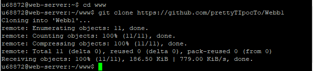
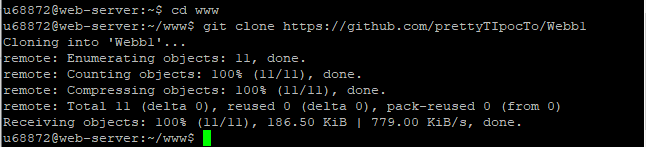

Подключаемся к учебному серверу по SSH с помощью клиента Putty
С помощью команды ping на учебном сервере узнали IP-адрес веб-сервера kubsu.ru. Команда ping используется для проверки доступности удалённого хоста или IP-адреса в сети.
После ввода команды, мы видим отправляются ли пакеты на указанный адрес и есть ли ответ. Результаты будут содержать время отклика и количество потерянных пакетов.
С помощью команды nslookup узнали A-записи и MX-записи домена kubsu.ru и kubsu-dev.ru. А-записи нужна для связи домена с IP-адресом сервера, пока не прописана А-запись, сайт не будет работать.
MX-запись, отвечает за сервер, через который будет работать почта. Записи MX критически важны для работы почты
С помощью команды whois узнали дату регистрации домена kubsu.ru и kubsu-dev.ru. Команда whois используется для получения информации о зарегистрированных доменах, включая данные о владельцах и другие детали, связанных с доменным именем или IP-адресом.
После выполнения команды мы видим результаты запроса, включая такие данные, как:
- Дата регистрации и окончания действия домена
- Информация о регистраторе
- DNS-серверы, связанные с доменом
- Статус домена
 С помощью команды git clone скопировали репозиторий на учбеный сервер

С помощью программы FileZilla соединились сучебным сервером с вашим логином и паролем по протоколу SFTP и скопировали на локальный компьютер файлы из каталога www
С помощью команды git pull внеслы изменения с FileZilla на учебный сервер
С помощью команды git clone скопировали репозиторий на учбеный сервер

С помощью программы FileZilla соединились сучебным сервером с вашим логином и паролем по протоколу SFTP и скопировали на локальный компьютер файлы из каталога www
С помощью команды git pull внеслы изменения с FileZilla на учебный сервер